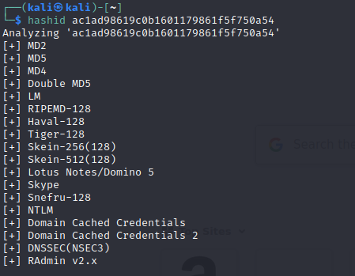
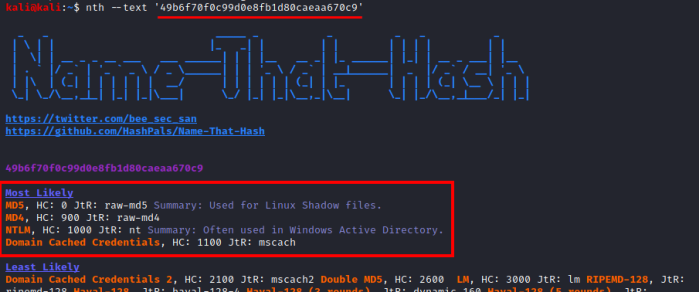
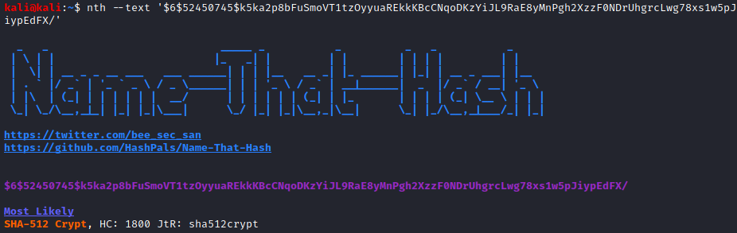

Indentify Encoding and Hashing algorithms
Encoding: it serves the
purpose of maintain usability. Encoding transforms data into another format using a scheme that is publicly available so that it can easily be reversed.
examples: Base2, Base8 (Octal), Base10 (Decimal), Base16 (Hexadecimal), Base32, Base58 Bitcoin, Base58 Flickr (release candidate stage), Base58 Ripple, Base62, Base64, Base69, Z85, ASCII, ....
Encryption: it serves the
purpose of maintain data confidentiality. Encryption transforms data into another format in such a way that only specific individual(s) can reverse the transformation. Encryption is a two-way function; what is encrypted can be
decrypted only with the proper key.
examples: AES, RSA, DES, Triple DES, ...
Hashing: it serves the
purpose of ensuring integrity, i.e. making it so that if something is changed you can know that it’s changed
examples: MD5, SHA-1, SHA-256, SHA-384, SHA-512, ...
Online Tools:• •
https://www.tunnelsup.com/hash-analyzer/ Ciphey
(for
Encoding formats
)
Useful to find
Encoding formats: Base2, Base8, Base10, Base16, Base32, ...
GITHUB:
https://github.com/Ciphey/CipheySupported ciphers:
https://github.com/Ciphey/Ciphey/wiki/Supported-CiphersInstallation:
python3 -m pip install ciphey --upgrade
Run:
ciphey --text '[EncodedString]'
HashID
Name That Hash
(for
Hashes)
Useful to find
Hashing formats: MD5, SHA-1, SHA-256, SHA-384, SHA-512, ...
GITHUB:
https://github.com/HashPals/Name-That-HashWebsite(easy mode):
https://nth.skerritt.blog/Installation:
pip3 install name-that-hash
Run:
 